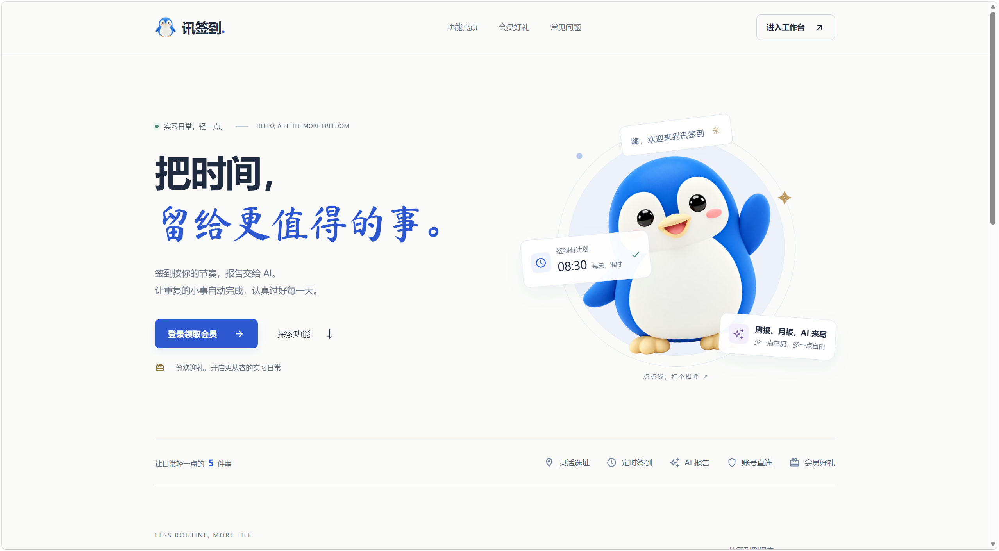
AI 智能实习工作台
一站式管理实习，让日常更从容。
将签到记录、实习周报与月报集中在一个工作台，串联实习中的日常事务，让记录更清晰，管理更省心。
- 签到管理
- 实习周报
- 实习月报
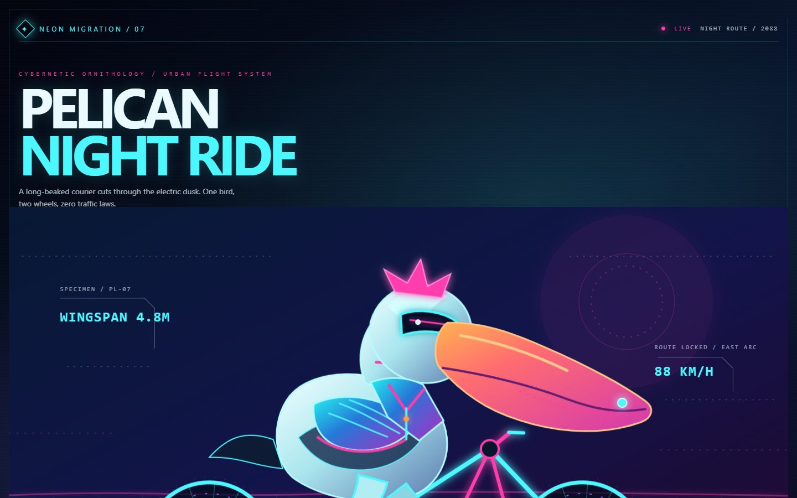
NEON MIGRATION 022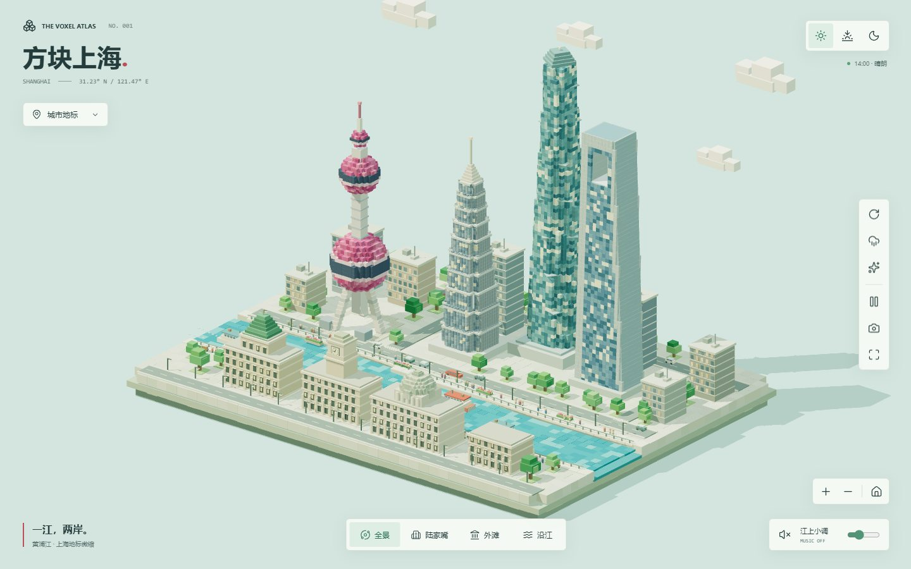
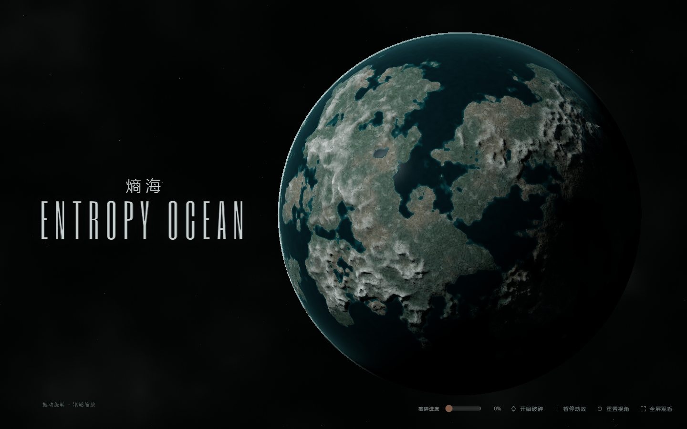
ENTROPY OCEAN 014 灵感正在发生01 / REAL-WORLD PROJECTS
从实习管理，到 AI 服务接入。
把实际需求，做成可以使用的产品。

一站式管理实习，让日常更从容。
将签到记录、实习周报与月报集中在一个工作台，串联实习中的日常事务，让记录更清晰，管理更省心。
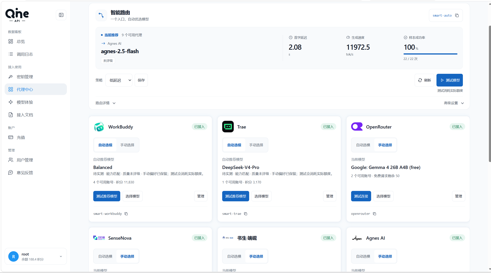
1 万+ token/s截图中的单次测试生成速度
截图显示单次测试达到 11,972.5 token/s。平台集中管理 API 密钥、代理账号与模型，通过智能路由统一 AI 调用入口。
02 / AI FILM SELECTION
6 个创作现场，30 部精选影像。
从商业短片到电影叙事，发现不同的表达。
外部作品精选 · 保留原作者署名。
先看封面，点击播放；部分为创作参考。
30 部作品，每个来源精选 5 部。
正在载入精选片单…
03 / THE COLLECTION
从一场海边骑行，到一座未来之城。
点击作品，亲自走进去。
48 件作品，等待探索
SELECTED EXPERIMENTS / 2026试试其他分类，或回到全部作品。
好奇心没有终点，探索也是。
48 / 48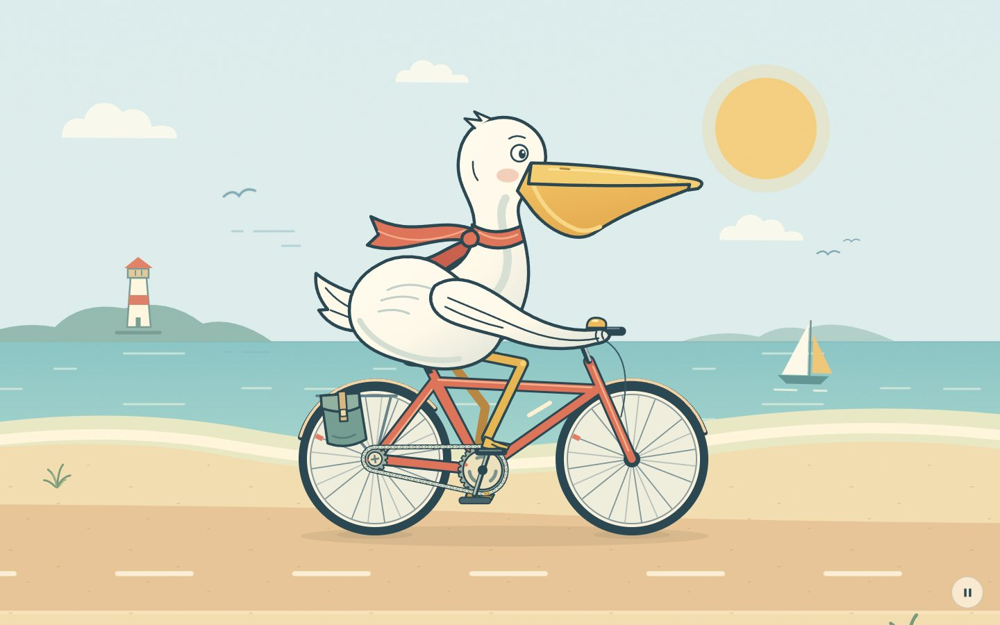
THE CYCLING COLLECTION04 / A LITTLE JOY IN MOTION
鹈鹕、青蛙、熊猫，还有一只爱兜风的茶壶。
19 段奇妙骑行，从海岸线一路驶向霓虹夜色。
05 / ABOUT ME & MY EXPERIENCE
我是 PANGZEHONG。
这是我的应聘作品集。
这里收录了我的 AI 辅助创作、实战项目与实习经历。从可浏览、互动、游玩的创意实验，到服务实习管理与 AI 调用的实战项目，用作品展示探索过程，用真实记录呈现实践成果。
INTERNSHIP / AUTOMATION IN PRACTICE
个人实习经历实习期间，搭建 TikTok 自动化工作流，将工具应用于实际运营场景。结合带货后台的 GMV、成交件数与商品曝光，记录业务表现，让实习成果有据可查。
两份完整月报展示值合计 · 412 件商品
2026.08.01—08.31 · 134 件商品
同份 8 月报表 · 商品点击约 7.9K 次
数据来自下方 TikTok 后台实拍。$ 保留后台币种符号，K 表示千；缩写金额为约数。Commission GMV 与归因 GMV 分开统计，以上数据不代表个人净收入或自动化带来的增量。
RESULTS, WITH RECEIPTS
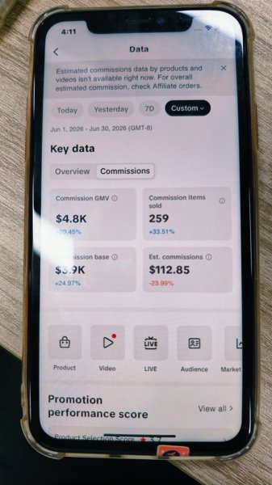
PHOTO 09查看大图259 件 · 精选月报 A；后台以 K 缩写显示，金额为约数。
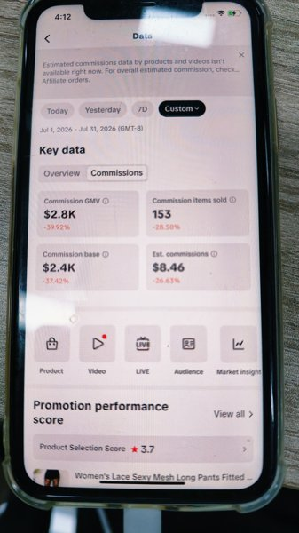
PHOTO 10查看大图153 件 · 精选月报 B；后台以 K 缩写显示，金额为约数。
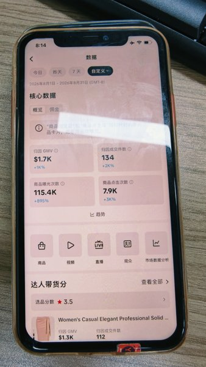
PHOTO 13查看大图134 件 · 完整月报；商品曝光约 115.4K 次，点击约 7.9K 次。
完整保留每张照片的统计区间与指标名称。未显示账号标识的报表独立列示；单日数据、阶段快照与完整月报不重复累加。
| 照片 | 报表区间 | 指标 | GMV | 件数 | 统计说明 |
|---|---|---|---|---|---|
| 01 | 2026-06-19 | 归因 GMV | $397.03 | 2 | 单日快照（GMT-6）；不与月报累加。 |
| 02 | 2026-06-23 | Commission GMV | $223.90 | 1 | 单日快照（GMT-6）；不与月报累加。 |
| 03 | 拍摄于 2026-07-21 | 账号首页 | $0.00 | 0 | 今日数据；账号状态展示，不计入月度统计。 |
| 04 | 2026-06-01 — 06-30 | 归因 GMV | $156.27 | 9 | 完整月报；账号标识未显示，独立列示。 |
| 05 | 2026-07-01 — 07-31 | Commission GMV | $433.78 | 29 | 完整月报；账号标识未显示，不与其他报表合并。 |
| 06 | 2026-07-01 — 07-31 | 归因 GMV | $141.35 | 11 | 完整月报；与 Commission GMV 分开列示。 |
| 07 | 2026-06-01 — 06-30 | 归因 GMV | $824.04 | 52 | 完整月报；账号标识未显示，独立列示。 |
| 08 | 2026-06-01 — 06-30 | 归因 GMV | $333.45 | 27 | 完整月报；账号标识未显示，独立列示。 |
| 09 | 2026-06-01 — 06-30 | Commission GMV | 约 $4.8K | 259 | 精选月报 A；后台以 K 缩写显示，金额为约数。 |
| 10 | 2026-07-01 — 07-31 | Commission GMV | 约 $2.8K | 153 | 精选月报 B；后台以 K 缩写显示，金额为约数。 |
| 11 | 2026-08-01 — 08-29 | 归因 GMV | 约 $1.3K | 107 | 8 月阶段快照；可能与完整 8 月报重叠，不累加。 |
| 12 | 2026-08-31 | 归因 GMV | $198.71 | 15 | 单日快照；可能已包含在 8 月完整月报中，不累加。 |
| 13 | 2026-08-01 — 08-31 | 归因 GMV | 约 $1.7K | 134 | 完整月报；商品曝光约 115.4K 次，点击约 7.9K 次。 |
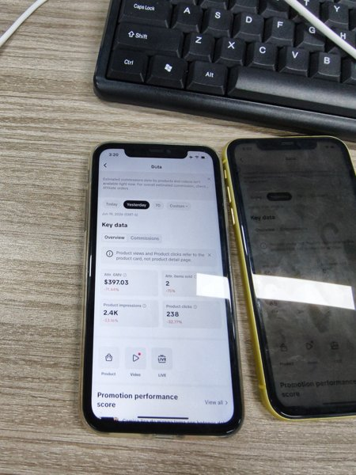
PHOTO 01查看大图2 件 · 单日快照（GMT-6）；不与月报累加。
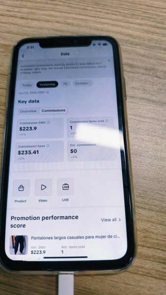
PHOTO 02查看大图1 件 · 单日快照（GMT-6）；不与月报累加。
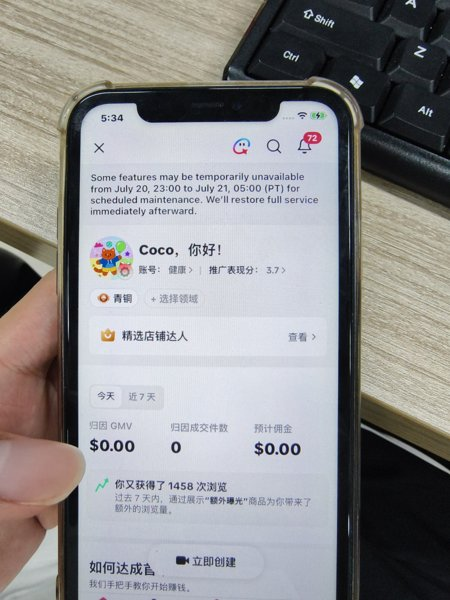
PHOTO 03查看大图0 件 · 今日数据；账号状态展示，不计入月度统计。
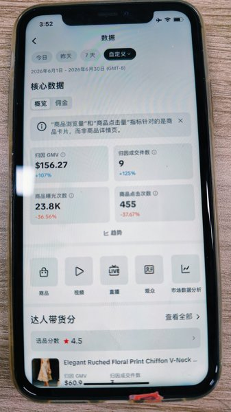
PHOTO 04查看大图9 件 · 完整月报；账号标识未显示，独立列示。
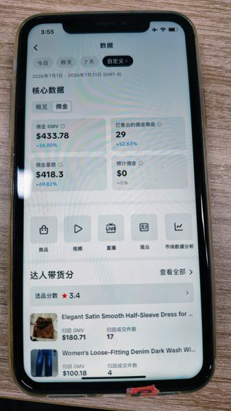
PHOTO 05查看大图29 件 · 完整月报；账号标识未显示，不与其他报表合并。
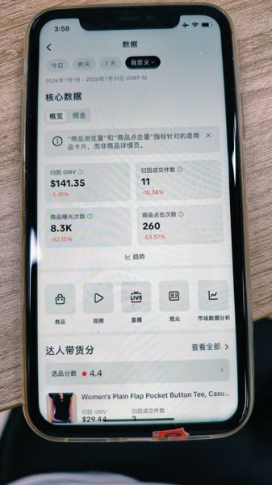
PHOTO 06查看大图11 件 · 完整月报；与 Commission GMV 分开列示。
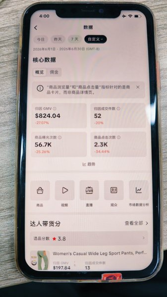
PHOTO 07查看大图52 件 · 完整月报；账号标识未显示，独立列示。
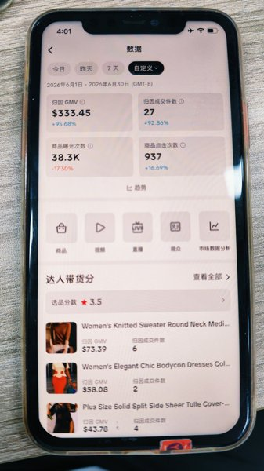
PHOTO 08查看大图27 件 · 完整月报；账号标识未显示，独立列示。
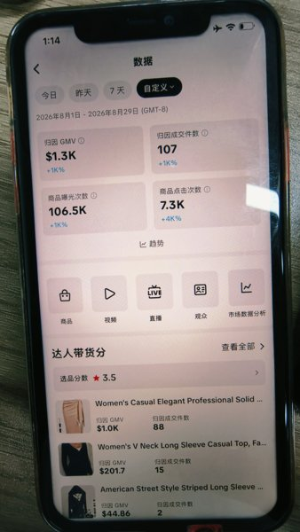
PHOTO 11查看大图107 件 · 8 月阶段快照；可能与完整 8 月报重叠，不累加。
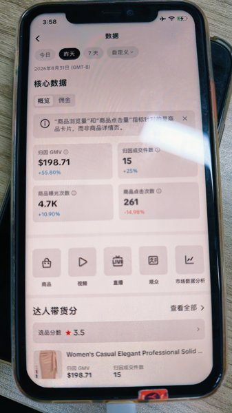
PHOTO 12查看大图15 件 · 单日快照；可能已包含在 8 月完整月报中，不累加。